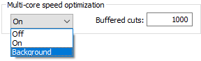
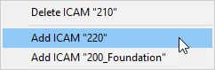
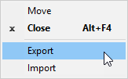
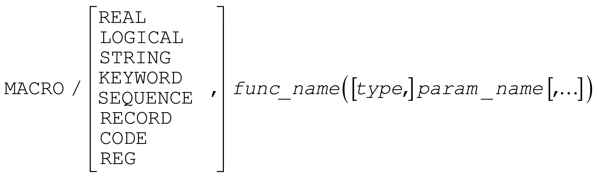

ICAM V23 Release
These release notes describe the most significant V23 enhancements and problem corrections.
Some of the enhancements and many of the problem corrections are also available in updated releases of V22 and in some cases V21 as well. If so, the release build number is listed at the end of the enhancement or problem description in [Vvv-yyww] format, where vv is the version, yy is the year and ww is the week (1-52).
We hope you enjoy your new release of ICAM products and we sincerely welcome your feedback.
The CGTech ICAM R&D Team December 12, 2018
Systems and Packaging
Product Availability
System Manufacturer |
O/S Minimum Requirement |
Microsoft Windows 32-bit** |
7, 8, 8.1, 10 |
Microsoft Windows 64-bit |
7, 8, 8.1, 10, 2008R2, 2012, 2012R2, 2016 |
ICAM software is not available for UNIX systems. An ICAM database created with V20 or earlier on a UNIX system is fully compatible with ICAM software running on Windows systems.
** V23 is likely to be the last version that supports 32-bit architectures.
Licensing
001 and 003 node-locked licenses are no longer supported. Node-locked licenses are still available, but they are now implemented using a floating license server that runs on the local machine and that only services license requests from the local machine. This server is automatically installed and started during normal installation of ICAM software on the local machine.
The ICAM Floating License Server has been updated to V10.0 (the old server was 9.0). This server must be installed in order to run V23 software. It is upwards compatible with older V9.0 and V8.0 floating licenses.
A new Additive (Hybrid) Manufacturing option (xhy230) is available with this release to support Directed Energy Deposition (DED) devices.
Maintenance and Support
The Quest, Gener and CeRun Help menu now includes a “Customer ID” selection that lists your ID, also called a PRISER (primary serial number). This unique identification is required when making technical support requests.
The Quest, Gener and CeRun Help menu also now includes a “Check for Update” selection that contacts an ICAM server on the Internet to determine if there is a more recent release of the software available for download. If so, a [Download…] button will be available. Updates come in two forms: official updates periodically made available to all customers, and hotfix updates made available to specific customers to solve a reported problem. Selecting the download button will download an installation executable file that can be run to install the new update.
Updates are automatically checked once per day unless disabled by clearing the “Check for update” box on the dialog. If updates are available, the menu selection changes to “Update Available”.
ICAM has launched a Helpdesk system that will provide you with quicker and easier access to ICAM’s support services to help you resolve technical software issues. Emails that are sent to support@icam.com are reviewed and registered as “tickets”. The email reply from ICAM will include a ticket number appended to the original subject line. All emails sent or received with a ticket number in subject line will be registered with the ticket in the Helpdesk system.
You can check the state of your tickets using ICAM’s Customer Portal. To access the portal visit icam.com/support and click on the large red "Customer Login" box. You will need to use your Customer ID when logging into the portal. This ID can be found using the Help»Customer ID menu selection described earlier. When accessing the portal for the first time, you will need to click on "Forgot your password?" that will generate a unique password which will be sent to you by email.
You can use the ICAM Helpdesk portal to open tickets, view their status, as well as close tickets that have been resolved. You can also use the portal to access the latest FAQs and technical tips. Once you have registered to the portal, you will need to give access (Customer ID & Password) to all those in your company who need access to the portal. If you have any trouble accessing the portal, please email support@icam.com.
Productivity Tools
Quest Developer’s
The questionnaire has been enhanced with new questions, as follows.
The General Information / General Information section question #3 “Machine type” now includes a “Mill-Turn” choice, which is equivalent to selecting the “Lathe” type and then answering “Yes” to question #31 “Does the machine have a C axis”.
When question #74 “Positioning mode change method: [Codes,Register]” is answered “Register”, QUEST will perform a consistency check when “Generating” to ensure that all axes related registers have an incremental register name defined.
The General Description / Registers section has a new “Use default resolution/minimum/maximum values” check-box on the horizontal splitter bar. When checked, all resolution and most minimum/maximum questions will not be asked. Instead, the resolution, minimum and maximum values will be set based on the register format. This setting is remembered on an individual post-processor and control emulator basis. The default for new post-processors and control emulators is to use the default resolution, minimum and maximum values (i.e., to not ask these questions).
The General Information / Display Format section now provides an additional option for rotary column display, to restrict the output to signed modulo-360 values. Previously, output could either list the rotary axis angle as-is, or as an absolute modulo-360 value. [V22-1719]
The General Information / Output Format section includes a new question #9 “Output MAIN and SIDE programs to a single file” that is asked for merging lathes with dual-program output. If “Yes”, the side head NC program is appended to the main head NC program file. BREAK command processing is disabled when using a single combined tape file.
The Machine Description / Tool Change section question #9 (#14 if lathe) “Tool change reference point (G) code” now permits an NA response, which uses the same (G) code as defined in the Machine Description / Home Position and Reference Point section. Use this to avoid the Quest “conflicting codes” diagnostic. The same NA choice is now also available for the “Head change reference point (G) code” question. [V22‑1706]
The Machine Description / Feedrate section includes a new question #90 “Adjust feed based on machine limitations” that defines if Gener should adjust the programmed feed to respect the machine axes feed velocity limitations. The default for existing post-processors is “Yes”; the default for new post-processors is “No”. Regardless of the response, the feed will be adjusted if necessary to suit CNC feed register limitations and feed timing calculations will take all limitations into account. This setting can be controlled at run-time using a new FEDRAT/ADJUST,ON-OFF command.
The Feedrate section also includes a new question #91 “Default tool length for 5-axis feed calculations” that defines the length of the tool that is used for feed coverage testing purposes when motions contain a rotary axis component. The default has always been 1 “primary” unit; this question provides a means of changing the default, including using a value of zero. This setting can be controlled at run-time using the FEDRAT/LENGTH command.
The Machine Description / Spindle section includes a new question #46 “SFM/SMM controlling head selection: [NA,Codes,Values]” that is asked for merging lathes. A “Codes” response can be used, for example, to define G110 and G111 controlling heads codes used by Okuma. A “Values” response can be used, for example, to define L1 and L2 controlling head settings used by Mazak. All spindle section questions have been grouped for better readability. New run-time diagnostic 01327009 is now output if the requested CSS exceeds the machine limit.
The Control Description / Coordinate System section now includes a new “standard vs. list encoding” question #10.7 that simplifies the output of subprogram style MCD for a translation LCS. This matches functionality added in V22 for a rotation LCS.
The Control Description / Circular and Helical Interpolation section question #35 “Multiple turns” now includes a new “Helical” response that limits the multiple turns feature to only those arcs that have a helical component. For V21 and V22 builds 1835 and later, set $ICCIR(65)=2 in the Machine Startup macro to achieve the same.
The Automated Canned Cycles / General Drill Cycle Information section question #2.1 “Cancel cycle code required between cycles” has a new “Always” choice, which when selected will result in a cancel cycle code being output when CYCLE/OFF is coded, even if the next motion reactivates the same cycle. This maintains V21 and earlier behavior. [V22‑1713]
The Automated Canned Cycles / Thread Cycles section has an improved question layout. There are also new questions #117 and #217 “Omit variable lead register when value is zero” to omit the single- and/or multi-pass variable lead register for constant lead threads. A new multi-pass question #204 “Double line threading cycle” provides the ability to define the Fanuc standard G76 Pmmrraa thread cycle parameter block. New question #255 “CNC tool nose offset” defines, for multi-pass threading, the way in which the CNC advances the tool along its edge from one thread step depth to another (this distinction is important for Virtual Machine simulation). New questions #266-269 provide the ability to define a fixed or variable minimum thread step distance.
A new Optional Post-processor Words / AM Command section provides control over an AM (Additive Manufacturing) device. AM is a process that builds 3D objects by adding layer-upon-layer of material. In a CNC machine context, AM generally refers to Directed Energy Deposition (DED) devices. This new section supports the definition of AM activation and deactivation codes as well as support for an optional power setting. Additive Manufacturing (available with an xhy license option) is supported in Gener, CeRun and Virtual Machine.
The Optional Post-processor Words / COOLNT Command section now permits a “primary” coolant type (e.g., FLOOD, THRU…) to be defined instead as an individually ON-OFF controlled “auxiliary” coolant type, provided that a primary coolant (M) code is not already defined for that type. [V22-1738]
The Optional Post-processor Words / COUPLE Command section question #4 “End threading (G) code” now supports a NA response, to be used when threading is cancelled by another interpolation code. New questions #20 “Always output feedrate when threading: [Yes,No,First]” and #21 “Always output feedrate after threading: [Yes,No]”, control the output modality of the thread feed or lead register. By default, feed information is output on all threading blocks and on the first feed motion that follows. Question #71 “Variable lead (G) code” now supports NA as a response, meaning that the constant lead (G) code is also used to create variable lead threads. Use this to avoid the Quest “conflicting codes” diagnostic.
The Optional Post-processor Words / HEAD Command section now includes a new question #10 “Program identification method: [NA,Codes,Values]” that is asked for merging lathes with dual-program output. A “Codes” response can be used, for example, to define G13 and G14 program identifications used by Okuma. A “Values” response can be used, for example, to define G109 L1 and G109 L2 program identifications used by Mazak.
The (G) and (M) code questions now support codes with a single decimal value in the range 0 through 999.9, without having to use the ALT functionality. Quest also now outputs consistency warnings when “Generating” if the code value cannot be formatted using the defined (G) or (M) register.
The Customization section has been enhanced as follows:
New LCS Startup / Shutdown macros are now available with the post-processor to simplify customization of NC code generation and processing when a change of local coordinate system occurs. The $P variables of the LCS startup macro provide access to the $LCS… variables in advance of the LCS actually being activated.
A new User Function Macros section provides a place to create user-defined macro functions (new for V23) to be used in post-processor, control emulator or model macros. Macro user-defined functions are similar to user-defined functions, except that they accept parameters and return a value in the same way that built-in and external user-defined functions do.
User-defined macro functions can also be saved to a file on disk or to the //ICAMFS internal file storage area, and then later loaded into any post-processor, control emulator or model that requires them, by using the INCLUD/'filename' command (ideally in the Declaration macro). This feature is designed to promote standardization of common macros at a facility. Macro functions defined in the User Function Macros section do not need to be declared in the Declaration macro or INCLUD’ed.
Model development enhancements:
It is now possible to organize the movable axes of the model into multiple Controller»Axes tabs, define custom names for each of the additional axes tabs, control the order in which axes are listed in each tab, control the order in which axes tabs are listed, and hide those tabs and/or axes that should not be controlled at run-time by the user. Axes tab customization is stored with the model. Hidden axes and tabs can be unhidden at run-time unless the model is Dedicated.
When running with an Advanced Model license option, the currently loaded model can be exported in ICAM M3D text format using a new Simulation»Export Model menu selection. Edited M3D models can be reloaded using the Import Model menu selection, replacing the model being edited. Extreme care must be taken when editing models in this fashion. The Import Model function also supports the import of Vericut machine models in MCH file format.
The automatic creation of mill-turn and merging lathe models from a post-processor or control emulator has been improved. Reference axes are also now used to simply reorienting between horizontal and vertical machine types.
STL mesh files can now be dropped onto the Mesh Properties dialog instead of having to browse for the STL file using the [Import] button. The units of input will be as last specified; the format of input will be “Automatic”.
A new [Smoothing] button is available on the Mesh Properties dialog. With this feature you can eliminate the facetted look of surfaces that in reality should be smooth. Smoothing relies on a user specified angle threshold that it applies to the entire mesh. When the angle between adjacent faces is less than this threshold, VM will show the edge with a smooth transition in the same way that it does when you create a Cylinder or Cone object. Otherwise, VM will show the edge as a sharp line in the same way that a Cylinder or Cone is shown when “Use sharp edges” is selected. Specifying an angle of 0 resets the mesh to the original sharp edge representation.
Other Quest enhancements:
Test cldata files can be dropped onto the Quest Test window instead of having to browse for the test file.
The Quest Database Navigator now has new “Close All” and “Close All But This” choices to simplify development when working with a large number of databases.
The interface kit is now listed in the Quest status bar. This can be pertinent as the interface kit usually defines the keywords file, which affects the User Defined words list and macro processing. Note that an “Automatic” kit uses the default word definitions.
Gener Post-processing
Adaptive post-processing permits the NC programmer to concentrate solely on cutting tool-paths, leaving the connecting positioning tool-paths to be automatically generated by SmartPATH; long entry, exit and non-cutting feed motions to be minimized by SmartCUT; and cutting feed rates to be optimized by SmartFEED. These three modules are collectively known as SmartPACK. They have been continually improved and fine-tuned.
SmartPATH has been enhanced to support positioning tool in and out of deep pockets, where there is very little room between the tool and pocket walls. SmartPATH also has been improved to develop optimal positioning paths when angled tool heads/holders are used. SmartPATH has been fine tuned to produce more esthetically pleasing symmetrical retract/plunge paths where this does not increase the overall positioning time.
SmartCUT has been enhanced to test the volume of material removed on RAPID axial moves (i.e., retract or plunge), and if the volume is zero (i.e., a touch but not a cut), then SmartCUT ignores the “touch” condition. This enables rapid positioning directly along the tool axis when it is safe to do so.
Post-processor commands have been enhanced to provide new functionality as follows:
A new AM command supports Additive Manufacturing (available with an xhy license option). The AM/ON command enables material deposition; AM/OFF disables deposition. An optional POWER value is available where necessary to control the deposition process.
{kind=link}
The AUXFUN, PREFUN and PPFUN/7 commands now support a trailing “SAME,register(s)” option, which defers the normal output of the command until such time as one of the registers listed to the right of the SAME keyword is next output. The registers can be defined by any combination of register descriptor string (to a maximum of 6 characters as usual), register index number, standard axis keyword or XYZ (implies X or Y or Z axis).
{kind=link}
The Gener Controller»PPFUN/7 table now lists deferred registers and their values resulting from AUXFUN, PREFUN and PPFUN/7 commands using the SAME option. [V22-1732]
The AUXFUN, PREFUN, PPFUN/9, 16, 18 and 19 commands all support (G) and (M) codes with a single decimal value in the range 0 through 999.9. The post-processor’s (G) and/or (M) registers must be defined with a fractional digit if fractional codes are specified. The following error diagnostics (severity 8) have been added to report problems with (G) and (M) codes:
0 1316002 |
Code n is invalid. Fractional M codes are not supported by this machine. |
|---|---|
0 1316003 |
Code n is within the standard range of permitted M codes, however it exceeds the maximum M code value n supported by this machine. |
0 1316004 |
Code n is invalid. Fractional M codes can have at most one decimal digit. |
0 1325002 |
Code n is invalid. Fractional G codes are not supported by this machine. |
0 1325003 |
Code n is within the standard range of permitted G codes, however it exceeds the maximum M code value n supported by this machine. |
0 1325004 |
Code n is invalid. Fractional G codes can have at most one decimal digit. |
The FEDRAT command has a new “ADJUST,ON-OFF” option that controls whether GENER should adjust the feed rate values that it outputs to stay within the velocity limitations of the axes being moved. The default is controlled by a new QUEST federate section question.
The INSERT and HEAD commands for merging lathes now also accept numeric values 1 and 2 in place of the keywords MAIN and SIDE to define the upper and lower head (or turret).
{kind=link}
The HEAD command for merging lathes now supports a MANUAL option, which inhibits the output of the head synchronization code. Coding HEAD/MANUAL,BOTH produces the same effect as adding MANUAL to the first HEAD/MAIN and HEAD/SIDE commands in the block. A HEAD/MANUAL,OFF inhibits the output of synchronization codes at the end of the merged block.
{kind=link}
The HEAD command now also supports a “[,SPINDL],{MAIN|SIDE|n}” option to define the controlling spindle. This sets the $SHEAD system variable, which controls the output of the new SFM/SMM controlling head codes. Coding this new option (or setting $SHEAD in a macro to a value of 1 or 2) will inhibit the automatic setting of $SHEAD when a SPINDL command is encountered.
{kind=link}
The LCS/AUTO command has been enhanced as follows:
A new “FEED,ON-OFF” parameter is now available to indicate whether or not high-feed positioning motions should also be candidates for automatic LCS processing in the same way that RAPID motions are. (The high-feed positioning threshold is set via the FEDRAT/RAPID command.) [V22-1749]
The “AUTO,mode” parameter now accepts a new “0” value for mode, which provides separate ON and OFF parameters to specify the conditions for automatic LCS activation and deactivation. Mode 0 is the default when running with a V23 generated post.
The “ON,n” activation possibilities are:
inhibits activation
at the end of the positioning sequence
after the last positioning motion containing a rotary motion (default)
same as 2, or before the last positioning motion, whichever occurs last
The “OFF,n” deactivation possibilities are:
inhibits deactivation
at the start of the positioning sequence
before the first positioning motion containing a rotary motion (default)
same as 2, or after the first positioning motion, whichever occurs first
The LIMIT command has been enhanced to provide a means of defining the tool length compensation and machine workpiece (fixture) compensation amounts currently in effect.
{kind=link}

When compensation amounts are defined, Gener can better diagnose over-travel conditions. New $[NL]*J “joint” system variables can be used to obtain the as-compensated axes positions during macro processing. The LIMIT/POLAR command now takes workpiece compensation into account when computing polar interpolation optimizations.
The LIMIT command has also been enhanced to adjust Virtual Machine axes limits for those axes controlled by Gener. This same functionality is also available using a new $FMSLIMIT function. [V22-1751]
{kind=link}

This command sets or restores travel limit min/max ranges for the names axes (e.g., XAXIS, YAXIS…). The ON-OFF keywords can be used with rotary axes to enable/disable travel checking.
The LINTOL command has been enhanced to improve control of rotary axes for applications like additive machining, water-jet and flame cutting, where it is better to sacrifice some rotational accuracy in order to avoid dwells caused by large rotary motions near rotary axis singularities. A new “THRU,angle” parameter specifies the maximum allowable angular deviation permitted.
The MCHTOL command processing has been enhanced to fully support HSM emulation and simulation when running with RTCP and/or LCS active. HSM adjusted feed information is now sent to Virtual Machine for more accurate simulation. Previously, HSM was only supported when the axes of tape output matched the physical axes of the machine. Note that the MCHTOL command and its related Quest Control Description / High Speed Machining section require the HSM license option.
The SAFETY command has a new option that provides a means of overriding the default rotary axes behavior during various types of positioning motions.
{kind=link}
This command can force GENER to maintain the same rotary pose on retract, plunge and other types of positioning motions, when it is not safe to switch to the alternate rotary configuration.
The THREAD/ON command has been enhanced as follows:
All PITCH command parameters can now be specified on the THREAD command, eliminating the requirement to spread thread parameters across two commands.
The “CUTANG,angle” parameter is now optional. If omitted, the entry angle will be computed based on the initial tool position with respect to the first GOTO motion in the THREAD/ON-OFF block.
A new “RETURN[,distance]” parameter is now available to more easily define the thread clearance retract distance applied between each thread pass. If the optional distance value is omitted, the retract height is defined by the initial position before the THREAD/ON-OFF block.
A new “CHAMFR,length[,angle]” parameter provides an alternative method to “ATANGL,angle[,height]” of defining the thread chamfer. The CHAMFR parameter defines a chamfer with an angle between 10 and 80 degrees (default 45), and with a defined length along the primary thread axis (as is commonly defined on the CNC). A negative length applies the chamfer within the body of the thread instead of adding it to the end of the thread. A length of 0 (zero) indicates that a chamfer is not required.
The combination of THREAD command enhancements and new Automated Canned Cycles / Thread Cycles section questions will simplify support for CNC single- and multi-pass threading cycles.
A large number of threading related corrections have been made to the post-processor and to simulation of threading with Virtual Machine. These are listed in the PQRs section further on in this document.
CeRun Control Emulation
Additive manufacturing (AM) is supported using new code_am_on and code_am_off codes, as well as a reg_am register defining an optional power value.
Single- and multi-pass threading cycles are now supported using code_thread_single and code_thread_multi codes. To simplify customization of threading cycles (if necessary), all $THxxx threading system variables are writeable, allowing threading parameters to be defined using either built-in or macro processing.
Merging lathe processing has been enhanced to recognize the “start of program” codes that identify the main and side programs, and to support the selection of the head (i.e., main or side) whose X axis controls the constant surface speed of a shared spindle.
Tracing of motions in the control emulator listing (lce) file now lists just those axes that have been specified on the MCD block or that are moving. Thread motions are traced as “thread” instead of “goto”, and a “pitch” trace lists the thread lead. [V22-1804]
New preprocessors are available to support the…
OSAI Series 10 CNC [V22-1743]
ABB robot RAPID programming language
Virtual Machine
Virtual Machine est maintenant disponible en français.
A new “additive” tool type is available to describe the tooling used for Additive Manufacturing (AM) and Directed Energy Deposition (DED) devices (available with an xhy license option). An additive tool has both a physical body definition (i.e., the tool profile) and a definition of the region where material will be applied when the device is on (i.e., the AM profile). When an additive tool is active, material removal simulation (MRS) adds material to the in-process stock rather than removing it as usual.
When Virtual Machine is used with Gener, new ADAPTV/PROTCT command options TRAV and ALL can be specified so that Gener path planning and optimization features use the model travel limits (which take tool length, tool diameter and workpiece compensations into account), instead of the post-processor defined travel limits. The PROTCT options are as follows:
AVOID |
Path-planning avoids collisions |
|---|---|
TRAV :su p:*new |
Path-planning avoids axes over-travel |
ALL :su p:*new |
Path-planning avoids collisions and axes over-travel |
SCAN |
Diagnose but don’t avoid collisions and axes over-travel |
The SCAN method now inhibits VM processing during path-planning look-ahead since VM has no effect on the path-planning outcome. This can significantly speed path-planning look-ahead. [V22‑1739]
The Simulations»Options»MRS dialog has a new multi-core speed optimization setting that enables multiple cores of the CPU to be used simultaneously to speed calculation of the in-process stock. Buffering cuts and periodically performing stock calculations provides for faster overall execution, however with regular pauses each time the buffer fills. [V22‑1736]
Axes travel limits can be adjusted at run-time using a new $FMSLIMIT macro function and/or LIMIT/SIMUL post-processor command. The $FMSLIMIT function provides the ability to query, modify, remove and/or reset the travel limitations of linear and rotary model axis. The LIMIT/SIMUL command provides the ability to modify, remove or reset travel limitations of model axes controlled by the Gener kernel. [V22-1751]
Flute length optimization performance can be significantly improved by using an alternate method to compute the required flute length. Previously, the minimum flute length was calculated by testing the entire tool for the portion “touching” the in-process stock, whether cutting or not. This is a CPU intensive calculation. An alternate method is now available, which computes the minimum flute length based on the cutting portion of the tool that is actually “cutting” the in-process stock. This nearly doubles processing speed. The choice of method is controlled by a new “METHOD,n” parameter on the ADAPTV/DEPTH command, with the default being the quicker method.
Machine simulation and material removal simulation of lathe threading operations have been improved. Variable lead threading can now be simulated, with decreasing lead threading containing a check for a feed reduction to zero (error diagnostic 0170004).
Other Virtual Machine enhancements:
Loading time at the start of processing has been quickened where possible.
Before selecting Run»Play to begin processing, if a simulation option is changed that requires a restart, the Run»Restart menu option and tool-bar button are now made selectable. [V21‑1738, V22‑1738]
A restart is no longer necessary when modifying tooling definitions or when making changes to the design part, in-process stock and/or fixtures. Changes made are effective going forward.
3D solid objects must be “water-tight” when used for material removal simulation. Testing and healing these objects can take considerable time. A new warning diagnostic 01700003 will be output identifying objects that requires healing. New fatal diagnostic 01700001 will be output identifying objects that cannot be healed.
Other diagnostics have been added to indicate when an unrecoverable error has occurred (01700000) or when material removal simulation has failed (01700002). These errors cause a more graceful exit of the process and may help in identifying the problem when reporting the issue to ICAM Support.
Vericut PLY files (a type of STL) are now supported for all Mesh import functions.
Very large STL files (over 2 Gb) are now supported (but not recommended).
In-process stock marked for automatic export at the end of processing will no longer be exported when the process is restarted or exited before it has come to completion.
The individual columns of the Simulation»Tools/Holders/Heads dialog are sortable.
Generic milling tools now have both rotating (i.e., spun) and non-rotating representations during simulation. This enables oriented boring cycles to be accurately simulated. This also enables full support for indexable end-mills.
To speed processing, Virtual Machine caches spun copies of tooling and other data in a temporary folder on the computer. This folder can be cleared, if necessary, using the Config utility “Clear cache folder” button. [V21‑1711, V22‑1711]
{kind=link}
Gener & CeRun Run-Time
A new “Loading” dialog now appears if there is a delay of more than a second or two when starting in Full or Progress mode. This dialog lists the steps remaining before processing can start (e.g., loading the model, loading the fixtures, et cetera) and identifies the time it took for each step to complete. This can help identify problematic simulation components, such as those that require healing or that contain too much detail. The appearance of this dialog can be controlled from the Tools»Preferences»General settings.
Debugging enhancements:
A new “Jump to cursor” (Ctrl+Shift+F10) context menu selection in the Source window can be used to change the flow of processing for debugging purposes, allowing the same input (i.e., cldata with Gener; MCD with CeRun) to be processed again, or allowing input to be skipped over.
Breakpoints can now be set on specific diagnostic message numbers, diagnostic severity level, simulation over-travels and simulation collisions.
When restarting, changes made to the Execute and Trace states of macros in the Macro Manager are no longer remembered (this avoids unexpected and hard to diagnose results). Debugging breakpoints are remembered, provided that the “Remember breakpoints between sessions” check-box is selected in the Breakpoint Manager.
Debugging of multi-channel processes in CeRun has been improved. Start of processing initialization is now done on a channel by channel basis instead of all at the same time. More enhancements are planned in the near future to simplify debugging of multi-channel processes.
Only modified error messages need be defined in the custom error message file identified by the ERFILE symbol definition in the ICAM.DEF file. [V22-1745]
Integration Tools
The CAM Integration setup utility now supports the integration of multiple ICAM software versions (e.g., V21, V22, V23) with each installed CAM system. Setup choices for each ICAM version are accessible from tabs at the bottom of the setup dialog. A right-mouse context menu provides options to separately add and remove integration with the ICAM product versions installed on the computer.
{kind=link}
If multiple ICAM versions are associated with a CAM system, the Extractor will prompt for the ICAM software version to use. For CAM systems that provide integrated post-processing, the choice of Gener version to use is automatic based on the selected post-processor.
CAM integration settings can be exported in an XML file format and imported onto a different computer, which provides a means to standardize CAM integration setup choices amongst a group of computers. Care must be taken though that software installation file paths are consistent between systems.
CATIA V5-6R2016 and later CAM integration will now attempt to find a more recent version of the post-processor name.version saved with the CATProcess, if the saved name and version combination no longer exists (e.g., following an upgrade to a newer version of CAM-POST). This avoids the NC programmer having to manually select the post-processor following an upgrade.
Manufacturing Extractors are currently available for:
3DEXPERIENCE 2015x − 2018x
CATIA V5R21 − V5R28
Creo 1 − 4
FeatureCAM 2016 − 2019
Mastercam X5 − X9, and 2017 − 2019
Mastercam X7 − X9 for SolidWorks 2014 − 2015
PowerMill 2015 − 2019
SolidCAM 2015
Unigraphics NX6 − 12
Manufacturing Extractors have been enhanced as follows:
New preference options better control Extractor behavior:
The “Save/Restore last setup” option when selected will remember the choices made in the extractor for the current session and apply them the next time the extractor is run for the same process. Settings are stored in a status.xml file in the working folder.
The “Use settings from previous extraction” option will merge the previous Virtual Machine VSW file contents with the newly created one, so as to preserve custom viewpoints, lighting, current view and other user interface settings.
The “Use common tolerance settings” option when selected will use a common set of tolerance values (Gouge, Collision, Facet…) regardless of the Virtual Machine model being used. Previously, separate tolerances were remembered on a model by model basis.
The “Use tool number as offset number” option when selected will ignore the CAM system tool length compensation settings and force them to be the same as the tool number.
The “Use external tool library” option when selected will by default use tool definitions from the selected tool library in place of the tool geometry definition from the CAM system. ICAM tool libraries in VSW format and Vericut tool libraries in TLS format are supported. The geometry source for individual tools is identified using color coding; the source can be overridden on an individual tool basis to use the CAM geometry, the default library geometry, or a selected tool in a selected library.
Multiple setup improvements for in-process stock allow the NC programmer to specify the flow of processing of one or more stock objects through multiple setups and/or NC programs. A single stock object can spawn multiple stock objects in later setups/programs, and vice versa. Selecting a stock object in the Extractor will highlight associated stock objects in other setups/programs.
{kind=link}
Multiple setup has also been improved to support dual-turret/dual-spindle type machines. Each setup can now clearly indicate the turrets and/or spindles in use for that particular setup.
New trace tabs are available to trace the extraction of components from the CAM system and to trace the generation of data needed for Virtual Machine simulation. New buttons are available to cancel the extraction if necessary, and to restart the extractor following changes to the CAM process.
A number of tooling related enhancements have been made:
Generic mesh tooling is now supported for milling tools.
Angled head tooling is now supported.
The FeatureCAM solid tool format is now supported.
The PowerMILL DGK file format is now supported.
NX Library Tool, Solid Tool and Probing Tool types are now supported.
An “Unused tool” group lists tools defined in the CAM process but not used in any tool-path.
A Vericut vcProject file can be dropped onto an extractor to use the tools, parts, stock and fixtures defined in the Vericut project file instead of those from the CAM system. A standalone Vericut extractor is also available to process Vericut project files with CeRun.
Aptsource / CLDATA enhancements:
The PowerMill DUCT5 CAM interface was enhanced to support the following DEF file option settings: [V22‑1720]
RAPID_FEED can be set to “YES” to have DUCT5 “rapid_feed” motions prefixed with a RAPID command. The default is “NO”, which outputs a high FEDRAT value in place of RAPID commands.
SKIM_FEED can be set to “YES” to have DUCT5 “skim_feed” motions prefixed with a RAPID command. The default is “NO”, which outputs a high FEDRAT value in place of RAPID commands.
USE_ISN can be set to “YES” to output special DUCT5 CLDATA records with a class code greater than 15000 as #1017:n ISN records (where n is computed as the DUCT5 class code plus the subclass code). This allows these records to be hidden in the Gener Source window if desired, simplifying debugging.
The Mastercam CAM interface was enhanced to support the APlus v2.2 LC and WA commands for additive machining. These commands are passed as-is to Gener, with LC using Major code #2000:1904 and WA using Major code #2000:1905. The interface kit has dummy macros to catch and ignore these commands if post-processor user-defined macros have not been written to process them. [V22‑1749]
ICAM continues to enhance the NX CLSF ICAM template, used to generate customizable aptsource from an NX manufacturing process.
Macros and Customization
General
It is now possible to create user-defined macro functions either within the Customization / User Function Macros section, or within external files on disk or the //ICAMFS internal file storage area. A user function macro is defined using the following SDL (syntax definition line):
,
{kind=link}
The new function name cannot conflict with any other variable or function name already defined. Parameters are passed “by value” meaning that they are not changed in the calling function. Somewhere within the body of the function, the function name should be assigned a value (otherwise the function returns $NULL). An ENDMAC command ends the definition.
An INCLUD/'filename' command makes the macro processor aware of user function macros stored in an external file (the default path is $icam_appdata\macro). An INCLUD command defining the function must be coded before the function is called (i.e., used in an expression). The INCLUD commands must be coded in the Declaration macro when “Strong” declaration is enabled.
The DECLAR command accepts a new CHANNEL keyword, coded after the variable type keyword, which adds one additional dimension to the variables and arrays declared on the command. This extra hidden dimension has a size equal to the number of available channels (i.e., 2 for a merging lathe, 1 for all other machine types). Variables and arrays defined using the CHANNEL option can later be specified with or without the additional channel array index value. If omitted, then the current channel number is used for the missing index value.
{kind=link}
Other enhancements:
The upper limit of 10,000 on an array dimension size has been removed.
Macro Functions
The following new and modified functions are common to all products:
New $FCEIL(value) and $FFLOOR(value) functions return a whole number. The $FCEIL function returns the smallest integer number that is greater than or equal to the specified value. The $FFLOOR function returns the largest integer number that is less than or equal to the specified value.
A new $FDATE(format *[,*date]) function formats the current or specified date according to the supplied format string and returns the result as a string. The optional date can be a string in $DATE format, or a number in $FSTAT format. The format string consists of a combination of plain text and format codes identified by a % sign. Plain text is copied to the return string as-is; format codes are converted to numeric or text representations of date and time. For example, $FDATE('%Y.%m.%d') returns the current date in numeric YYYY.MM.DD format.
The $FERSEV(errnum *[,*severity]) function now accepts an optional second argument, which is the new severity level for the specified diagnostic. The old severity value is returned.
A new $FMXTYPE(matrix *[,*type]) function returns a numeric value that identifies the transformation type of the specified matrix. An optional type keyword can be given to test for a specific transformation type.
A new $FTMPFILE([file]) function creates a temporary file in the Windows TMP directory returning a string containing the absolute path and name of the temporary file. If an optional file is specified, then a copy of the specified file is created in the TMP directory instead of an empty file. Use the ‘//ICAMFS/” universal file descriptor to obtain a temporary copy of a file in the internal file storage area. Temporary files are automatically deleted when the process ends.
Virtual Machine functions:
The $FMSADPT function can now also be used by CeRun to enable/disable the reporting of collisions. CeRun however cannot avoid collisions (as Gener can).
A new $FMSGPOSJ function can be used to get the current joint position of any model axis identified either by its component ID (from $FMSID) or kernel axis number or name. Similarly, a new $FMSGPOSW function returns the WCS (work coordinate system) value of the specified axis.
The $FMSIDT function can now be called with “TOOL,id” to return the type of the specified tool component id (i.e., 1:holder, 2:body…). This functionality was developed so that collision testing of specific tool components could be deactivated via the $FMSVCL function if necessary. [V22-1748]
The following macro code inhibits collision testing with the tool body of the currently loaded tool, which can significantly speed simulation of long tools in deep pockets:
A new $FMSLIMIT function can be used to query or customize the travel limit range of any linear or rotary axis define in the model. This can be used, for example, to temporarily inhibit travel checking when simulating a tool change, or to shrink the available travel for SmartPATH or other considerations. [V22-1751]
The $FMSMSP function now accepts an optional TURN-MILL parameter, which can be used to define in advance the controlling spindle for turning and milling operations on a mill-turn machine. This function can now be used by CeRun when running the control emulator integrated with Dassault Systèmes DELMIA machine simulation.
A new $FMSUPDPOS function can be used to update the kernel ${XYZABC}M machine and ${XYZ}W workpiece system variable values to match the current Virtual Machine axes positions, which takes tool and workpiece compensations as well as $FMSMOVE commands into account.
The $FMSVCL function accepts a new LOCK-AUTO parameter, which if set to LOCK will inhibit any further activation or deactivation of collision testing on the specified component except via future calls to $FMSVCL or by SmartPATH. AUTO is the default and enables internal changes to tool collision states as necessary. [V22-1748]
Macro Variables
The following new variables are available with both Gener and CeRun:
$ASSVMNAM is a string variable listing the name of the associated Virtual Machine model. The string is blank if there is no associated model.
$AXESC2P is a read-only string variable in $AXES format that indicates the machine axes that are being controlled by polar interpolation. It is blank when polar interpolation is not active. $OE and $INFO read-write variants of this variable are also available in Gener.
$CHSIZ is a read-only variable that indicates the total number of kernel channels, which is equal to the number of composite control emulator components, or 2 for a merging lathe and 1 for all other machine types. $CI is a read-only variable that indicates current kernel channel number. [V22‑1738]
$DIAGLIST is a settable sequence variable that lists all diagnostics (by number) that have occurred since the start of processing, or since last cleared. This variable can also be used during Gener $FLOOK and $FINFO look-ahead processing.
$EV indicates the variable thread lead ($E already returns the thread lead). Thread lead values are calculating as thread pitch values times the number of thread starts. I.e., $E=$PITCH*$MULTRD and $EV=$PITCHV*$MULTRD. $OE and $INFO read-write variants of this variable are also available in Gener.
$FOI identifies the first operation index ($OI) following the last tool change. This variable is initialized to zero at the start of processing and is reset to zero at each tool change. It is automatically set to the current operation index ($OI) on an operation change. It is also settable in a macro.
$LCSMTN is a settable variable that indicates if and how LCS affects the rotary axes of the machine when LCS is activated. If the value is −1, then LCS is not capable of moving rotary axes and setting this variable to any other value will result in a diagnostic. Otherwise, this variable can be set to indicate no motion, rotary-only motion, or RTCP rotary motion about the tool tip.
$LCSORD is a read-only variable that identifies the contents of the $LCSROT sequence variable, which indicates the LCS rotation parameters. It will be the string “IJK” if LCS rotation is defined about a vector, otherwise it will be a 2 or 3-character string “xxx” where each character “x” in the string will be one of the letters A, B or C representing rotation about the X, Y or Z axes respectively.
$PITCH indicates the thread pitch ($PITCHV already indicates variable thread pitch). $OE and $INFO read-write variants of this variable are also available in Gener.
$PSE is a read-only logical variable that is set true when running combined post-processing, simulation and control emulation.
$TH* thread cycle variables are now read-write, with the exception of those listed below. This enables macro processing to set threading parameters if necessary.
$THTYPE is not settable. Gener does not allow the $THCUTS, $THDPTH and $THSTEP variables to be set, since these are derived from a thread stepping table created used the THREAD command STEP and DEPTH parameters (these variables are settable in CeRun).
A new $THCHFT “thread chamfer type” variable indicates if and how the thread chamfer was defined. Values are 0 if a chamfer is not defined, 1 for CHAMFR and 2 for ATANGL (Gener only). The $THCHFA and $THCHFL variables return the length and angle as defined by the chamfer definition type.
The following variables, previously only available with Gener, are now also available with CeRun:
$E defines the thread lead.
$PITCHV defines the thread variable pitch.
$SHEAD defines the controlling spindle.
$SUBNAM is a string containing the current sub-program name.
Gener variables:
There is a new concept of “joint” axis, to represent the Gener kernel machine axes after taking LIMIT/LENGTH tool compensation and LIMIT/ADJUST workpiece compensation into account. The following $…J joint variables are available:
$[NL]{XYZUVWE}J linear axes joint positions
$[NL]{ABC}[TH]J rotary axes joint positions
$[NL]{ND}J nutating axes joint positions
$AIRCUT is a read-only logical variable that is set true when SmartCUT is active.
$AXESMCD is a string variable in $AXES format that indicates the axes that have been output to the MCD since the last tool change. This variable is initialized to blank at the start of post-processing and is reset to blank at each tool change. It is also settable in a macro. It can be used to test if an axis has been output to tape since the last tool change or custom event.
$CUTTER is a read-only sequence variable of length 7 or 10 that contains the APT standard cutter definition from the last CUTTER command.
$FEDOPT is a read-only logical variable that is set true when SmartFEED is active.
$FITMAXPTS is a numeric variable that sets an upper limit on the number of motions that can be considered for inclusion into a single arc or NURBS during fitting. The default continues to be 5,000, but can be set to any limit, including “0” which means unlimited.
$GOTOCLN is a numeric variable that is set to the current CLN each time a motion is processed. This variable is initialized to zero at the start of post-processing and is reset to zero at each tool change. It is also settable in a macro. It can be used to test if a motion has been processed since the last tool change or custom event.
$INFO.OPCNT is a read-only numeric variable that is set to the number of transitions from positioning to cutting that occurred in the cldata range scanned by the last $FINFO function call.
$INFO.ISMSR is a logical variable that is set true when there are multiple operations in the cldata range scanned by the last $FINFO function call (see $INFO.OPCNT above) and they don't all start with an identical rotary position.
$LCAMOD is a numeric variable that indicates the LCS/AUTO mode. A new mode 0 is now supported, which uses separate $LCAON and $LCAOFF variables to specify the conditions for automatic LCS activation and deactivation. The various possibilities are listed under the LCS/AUTO command on page 10.
$LIMADJ is a read-only numeric sequence variable that indicates the fixture compensation xyz offsets as defined using the new LIMIT/ADJUST command.
$LIMLEN is a read-only numeric sequence variable that indicates the length compensation xyz offsets as defined using the new LIMIT/LENGTH command.
$LINTOL is a logical variable that indicates and can change the LINTOL/ON-OFF state.
$ORIGIN and $ORIGINL are read-only sequence variables that contain the current ORIGIN and ORIGIN/LAST command matrices. $OE and $INFO read-write variants of these variables are also available.
$SCTLOOK is a read-only logical variable that is set true during SmartCUT and SmartFEED look-ahead.
$SCTLRNG is a numeric variable that can limit the number of continuous feed motions analyzed during each SmartCUT and SmartFEED look-ahead. By default, each look-ahead can process up to 10,000 feed motions. This can be set to as few as 100 (for better responsiveness at the expense of longer processing time) or as many as 50,000 (for poorer responsiveness but shorter processing).
$TLMERGE is a logical variable that can be set false to cause repeated loads of the same tool to each occupy their own $TLTAB row. This variable is true by default, which results in one row in $TLTAB per tool, no matter how many times loaded.
Motion variables have been enhanced to simplify macro development with merging lathes:
$N* next motion variable processing now returns the next motion for the current turret. Previously, the next motion in the cldata was returned without regard to merging lathe HEAD processing.
${XYZ}* macro variables can now be used when the SIDE turret is active on a merging lathe. Previously, ${UVW}* variables were required to be used when referencing the SIDE turret X, Y and Z axes. Either can now be used)
CeRun variables:
$ASSPPNAM is a string variable listing the name of the associated post-processor. The string is blank if there is no associated post-processor.
$PREPROC is string variable listing the name of the associated pre-processor. The string is blank if a pre-processor is not being used.
$SUBSTK is a read-only sequence of strings, listing the sub-programs on the CNC program stack. The sequence is empty when processing the main program.
Virtual Machine variables:
$VMDRAW is a logical variable that when set false inhibits updating of the Simulation window, except when paused or at the end of processing. Temporarily set $VMDRAW false to speed processing when performing many $FMS function calls in a macro. [V22-1728]
PQRs
The following is a partial list of corrections made to V23.
CAM-POST
PQR |
Description |
|---|---|
0 62373 |
When Machine Description / Tool Change question “Tool change location” was answered “Home”, we would in some conditions unnecessarily ask for the location of the machine reference home (since this information is defined in the Home Position and Reference Point section). When “Tool change includes automatic motion to change position” was answered “Yes”, we would unnecessarily ask “Tool change block output with motion to TC point” (since the motion is generated by the CNC tool change processing). [V22‑1706] |
0 04096 |
SAFETY/NEXT in combination with LINTOL processing could output an extra block with a G00 code and no motion. [V21‑1703, V22‑1703] |
0 04097 |
The positioning motion to the R plane of a canned cycle was incorrectly setting the continuous motion $INFO.ISCR, ISCL, ISCP and ISCA flags. [V21‑1703, V22‑1703] |
0 04115 |
The Gener Macro Manager would not list RMD macros that were disabled in Quest. [V22‑1706] |
0 04127 |
Canned cycle blocks were being output in incremental positioning mode if the cycle immediately followed a G91 G28 motion to home. [V22‑1706] |
0 04131 |
The FROM command was incorrectly resetting the “Special” tool and head change positions. [V22‑1706] |
0 04132 |
An unnecessary G90 was being output after a tool change with an “automatic” motion to a workpiece reference home position. The G90 code is not needed since a G91 G28 code was not output by the post-processor. [V22‑1706] |
0 04133 |
The pending G90 following a G91 G28 reference return to home will now be output on a BREAK, STOP, OPSTOP, END, REWIND and FINI, to ensure that the machine is in the required positioning mode during potential CNC operator intervention. The G90 will not be output for STOP and OPSTOP in the special case where high-speed machining is active and requires the CNC be in G91 incremental mode. [V22‑1706] |
0 04136 |
When high speed machining requires an automatic switch to G91, a G90 code is now output just after the HSM cancel code instead of just before. [V22‑1706] |
0 04141 |
A pending CUTCOM/OFF,LENGTH (e.g., G49) was being output after a G53-style machine reference motion home. Delayed length compensation must be applied before motions to machine reference positions. Delayed length compensation continues to be output after a G28-style reference motion home. [V22‑1707] |
0 04142 |
Simulated cycle warnings about DELAY not being available are now suppressed if Automated Canned Cycles / General Drill Cycle Information question #54.1 “Ignore dwell where not supported” is answered “Yes”. [V22‑1707] |
0 04145 |
Deferred workpiece compensation (e.g., G54) would not be output following a tool change if Quest Tool Change question 5.1 “Tool change includes automatic motion to home” is answered “Yes” and the machine home type is either “Fixed” or “No”. The internal automatic motion to the tool change position was applying workpiece compensation but not outputting the compensation code. [V22‑1707] |
0 04153 |
The $TLMODE setting is now being applied to GOHOME motions and motions home due to tool change for machines with “Fixed” and “No” home type. For these machines, the motion home is to defined coordinates, and the $TLMODE setting should have been applied so that redundant (i.e., safe) output could be obtained if desired. [V22‑1708] |
0 04213 |
The Save-For-Review of a very large process would fail to load if one or more components of the review file were larger than 2 Gb. $FDOC, Package-Job and Save-For-Review could also fail to save on systems with low memory availability (we now minimize in-core memory requirements when creating zipped files). [V21‑1715, V22‑1715] |
0 04220 |
When running a review of a program that was saved for review, clicking in a Trace window could cause the process to hang. This is because a mouse click in a trace window causes a “Play”, which is not available when reviewing a job. Trace window mouse clicks are now ignored when reviewing a process. [V21‑1714, V22‑1714] |
0 04233 |
Gener will crash when exiting a cycle startup macro if a post-processor command in the startup macro causes the previously active cycle to be cancelled. This can happen when the delayed output of G80 due to a CYCLE/OFF command is ultimately output during cycle startup macro processing. [V22‑1716] |
0 04234 |
Various updates to internal CAD-APT processing of multi-point aptsource data. Standard APT keywords TLLFT, TLRGT, TLON, TLNDON, TLONPS, TLOFPS, TOLER, GOLFT, GORGT, GOFWD, GOBACK, GOUP and GODOWN are all now reserved words and have class:subclass definitions. Traced cldata continued records are now identified using CONT/ instead of MOVE/. [V22‑1717] |
0 04248 |
$CYFEDV was incorrectly being factored by the $PCONFC (machine primary to secondary units conversion) value. The units of $CYFEDV are in fact determined by the $CYFEDT value (1:IPM, 2:IPR, 3:MMPM, 4:MMPR, 5:PERMIN, 6:PERREV), as defined on the last CYCLE activation command. This correction only affects post-processors running in machine secondary units. [V22‑1718] |
0 04257 |
Rotary Turn Around (RTA) could go into an endless loop when both solutions were invalid. [V21‑1719, V22‑1719] |
0 04286 |
APPLY/MILL,YAXIS while disabling the C axis, was inadvertently setting the current value of the B axis to the C axis value. [V21‑1723, V22‑1723] |
0 04296 |
When RAPID is modal (as defined in Quest), the RAPID flag was unexpectedly cleared after the first RAPID GOTO following a CYCLE/OFF. [V22‑1724] |
0 04349 |
Quest now loads the word file and diagnoses problems just as it is done by Gener. [V22‑1733] |
0 04353 |
Changes to the Quest Comments section and to macros could be lost when switching between multiple post-processors in memory. [V22‑1734] |
0 04358 |
This change provides support for angled heads in SmartPATH. [V22‑1733] |
0 04372 |
Multi-motion 5000 class records are now supported by arc-fitting, NURB-fitting, HSM and all other forms of look-ahead. The long-term work-around of coding a CONTRL/NOMPNT command in the aptsource to segment multi-motion records is no longer required. [V22‑1742] |
0 04413 |
The Gener launch panel “Options»Trace in listing»CL records” feature was incorrectly tracing long CL records across 2 lines in the listing; CL traces are now truncated at a single line only. Also, a diagnostic message output near the end of a page could cause the requested number of lines-per-page to be exceeded. [V22‑1738] |
0 04426 |
Breakpoints set on a CLN record number were incorrectly triggering breakpoints in CLDATA sub-programs. [V21‑1741, V22‑1741] |
0 04433 |
Time values in the Gener listing are now capped at 999 hours instead of 99 hours. [V22‑1742] |
0 04458 |
Two lead values (one for the X axis and another for the Z axis) were incorrectly being output for tapered threads. [V22‑1745] |
0 04459 |
Answering “Yes” to COUPLE question #2 “Thread function modal” had various issues making this form of threading unusable. [V22‑1746] |
0 04460 |
The PTC interface THREAD/AUTO,…,IPM,value qualifier was processing the positioning feed value in whatever feed mode was last specified (e.g., IPR), which could result in a much faster positioning feed than requested. [V21‑1746, V22‑1746] |
0 04461 |
The post-processor now diagnoses (error 1347007) an attempt to cut a variable lead thread on a CNC that does not support this feature. [V22‑1746] |
0 04464 |
The post-processor now diagnoses (error 1347008) an attempt to cut a tapered thread or chamfer on a CNC that does not support tapered threading (i.e., Quest COUPLE question #41 answered “No”). [V22‑1747] |
0 04465 |
The post-processor now diagnoses (error 1501006) an attempt to cut a thread while the spindle is stopped. [V22‑1746] |
0 04466 |
The multi-thread in-feed pattern M codes are now output before other thread cycle information, so that a block purge due to exceeding the M code limit of a block will still produce a good thread. [V22‑1746] |
0 04467 |
A THREAD/ON command specifying multiple CUTS pairs is now output if possible using a series of single-pass thread cycles. Previously, the thread would be output either 1) using a multi-pass thread cycle but ignoring the specified thread step increments, or 2) using COUPLE command processing if a multi-pass thread cycle could not be used. [V22‑1746] |
0 04468 |
Only a single diagnostic message is now output when attempting to cut a thread with CSS active. [V22‑1746] |
0 04469 |
The “Tip Vel” column display was incorrect when threading. The velocity and block time was computed based on the last FEDRAT command instead of the last PITCH command. Note that this correction does not affect tape output, which correctly uses the specified PITCH. [V22‑1747] |
0 04472 |
THREAD cycle output is now rounded instead of truncated on output. [V22‑1747] |
0 04474 |
The response to Automated Canned Cycles / Thread Cycles question #244 “Height measured from base of thread” was being ignored. The coordinates were always output at the base of the thread regardless of this response. [V22‑1747] |
0 04475 |
An extra finish cut was being output with thread cycles. Specifying a finish allowance with zero finish cuts was previously not adjusting the generated thread to exclude the finish allowance. [V22‑1747] |
0 04476 |
When using increasing/decreasing thread lead, the pitch is now correctly adjusted on subsequent blocks if the thread spans multiple blocks. Also, variable thread lead is now tested to ensure that the decrement value does not result in zero velocity (new diagnostic 1520008), or that the increment value does not result in velocity limits being exceeded (new diagnostic 1520007). [V22‑1747] |
0 04481 |
Corrected various post-processing and simulation issues related to MULTRD multi-start thread processing. [V22‑1750] |
0 04482 |
Long comment strings in a Mastercam NCI file could result in an “Invalid record format; processing aborted” diagnostic. [V21‑1748, V22‑1748] |
0 04511 |
Breakpoints on ISN records could break multiple times when look-head processing is active. [V21‑1752, V22‑1752] |
0 04517 |
The THREAD cycle CUTANG value was not applied correctly. The absolute value of the difference between CUTANG and a straight entry was being applied in the forward direction of the thread. The in-feed is now applied along the CUTANG exactly as specified. [V22‑1751] |
0 04518 |
The tool was not returned to the starting clearance position at the end of an emulated THREAD cycle. [V22‑1751] |
0 04523 |
The questionnaire was incorrectly allowing Circular Interpolation question #35 “Multiple turns” to be asked for a CNC defined with radius arc output only. [V22‑1751] |
0 04525 |
THREAD cycle zig-zag infeed did not match how CNC machines behave. An alternating offset was applied on all cuts, however on the CNC, even cuts have zero offset and odd cuts are offset by the infeed angle. [V22‑1801] |
0 04533 |
Quest “The COUPLE Command” question #80 “Tool pull-out possible” has been removed since there is no known CNC with this functionality. [V22‑1801] |
0 04538 |
Coding COOLNT/OFF,NOW generates a diagnostic in V22, but this command was accepted in earlier versions. V22 has been updated to also quietly ignore NOW when cancelling coolant. [V22‑1802] |
0 04577 |
The “SIEMENS drilling cycles” RMD macro was not outputting an MCALL to end a modal cycle if the answer to General Drill Cycle Information question #3 “Cancel cycle code required between cycles” was answered “Always”. [V22‑1805] |
0 04580 |
A PPFUN/12,NEXT command did not apply to subsequent blocks of a safe motion generated via the SAFETY/…,NEXT,… command. [V22‑1808] |
0 04602 |
The Quest Test Result window right-mouse code and reg synchronization to the originating question would only work once the post was Generated. [V22‑1809] |
0 04612 |
Machine axes maximum feed limits are now correctly computed when in LCS, C2P and RTCP modes. Previously, feed limits were based on the named axis and not the actual axis that was moving. |
0 04618 |
The PPFUN/3 command was truncating error messages at 256 characters. [V22‑1811] |
0 04622 |
FCC page format output was incorrectly reducing the visible page width by 1 character and also incorrectly affecting HTML output if also selected. Minor listing file enhancements were made for consistency of word wrapping and centering. |
0 04635 |
Multi-byte and double-wide characters (e.g., Japanese, Chinese) are now correctly aligned in the Gener listing. [V22‑1814] |
0 04648 |
A tool loaded on both the MAIN and SIDE heads of a merging lathe was incorrectly sharing the same $TLTAB tool row. [V22‑1815] |
0 04694 |
SAFETY/NEXT was not working with high-feed positioning motions. [V22‑1819] |
0 04712 |
Exiting from a Gener or CeRun Progress dialog and then later restarting in Full mode could result in an empty interface window. [V21‑1821, V22‑1821] |
0 04717 |
The first feedrate of the program could be ignored if the feedrate units are not specified. [V22‑1820] |
0 04728 |
Quest crashes in the COOLNT section if an empty keyword name (i.e., entering just a comma) is specified for a coolant type. [V22‑1822] |
0 04727 |
The INSERT, TPRINT and DISPLY commands no longer call the Register macro as these commands do not output text to a register. [V22‑1826] |
0 04780 |
The Mastercam NCI to APT conversion has 2 CYCLE related corrections. 1) A PERMIN,0 was output instead of the correct feed in some instances. 2) Cycle depth is now rounded to 2.5x10-8 which should eliminate unnecessary CYCLE commands when the depth changes by an insignificant amount. [V22‑1829] |
0 04782 |
For a lathe in turning mode, the $NIC, $NJC and $NKC variables will return the vector component of the next CLDATA motion as-is. This matches the behavior of V22 prior to build 1811. In all other cases, they return values that will match the corresponding $IC, $JC and $KC values after the next motion is processed. [V22‑1829] |
0 04787 |
A local coordinate system (LCS) is now automatically cancelled during GOHOME processing before outputting the motion to a non-reference home position. |
0 04780 |
Fixed a Windows 10 problem in the QUEST dialog editor where selecting dialog or its component using the left button click would not work. [V21‑1832, V22‑1832] |
0 04806 |
The registers defined for scale LCS center were not being used. Added Gener functionality to compute and output the scale center where required. [V22‑1832] |
0 04842 |
Zero tracking of secondary axes was not computing coordinates correctly when used under cycles. [V21‑1838, V22‑1838] |
0 04847 |
A return from reference home on a mill-turn would attempt to move an unavailable Y axis if the mode was changed from mill to turn. [V22‑1839] |
0 04918 |
Double clicking on a Review or Packaged Job file (or running from a Command Prompt) might fail to load the job due to a problem in how relative file paths were resolved. [V22‑1847] |
0 04921 |
APT commands with a string continued from one line to the next were not working if they occurred on an APT command that immediately followed a GOTO, FROM, MOVE or CONT command. Starting with V22-1717, motion commands in the APT file perform a 1-block look-ahead in APT processing to check for multi-point motions. When the block was later read under normal processing, a missing flag setting resulted in the “Invalid APT statement” error. [V22‑1847] |
Control Emulator
PQR |
Description |
|---|---|
0 04089 |
$OPTAB length compensation is now only updated when a motion occurs with a compensated axis. This eliminates doubled offset values when length compensation is activated after a tool change. [V22‑1701] |
0 04140 |
The Control Emulator questionnaire is now asking for “Home” and “Special” tool change positioning when “Tool change includes automatic motion to change position” is answered “Yes”. The home positioning must be defined in Quest in this case because the MCD does not contain the home and/or tool change position. [V22‑1707] |
0 04144 |
CeRun was incorrectly using the model defined G28-style workpiece reference home and tool change positions for machines defined with a G53-style machine reference home (i.e., Home Position question #2 “Reference home type” answered “Machine”). CeRun now moves to the specified or internally defined machine reference home and/or tool change position instead of to the model defined reference position. [V22‑1707] |
0 04195 |
CeRun now supports the $UNISIM variable which indicates model units. [V22‑1713] |
0 04263 |
The Okuma pre-processor was not analyzing the array element expression before calling the pre-processor Identification macro. [V22‑1720] |
0 04263 |
The Heidenhain pre-processor was not supporting Q and QS variables with an index of zero. [V22‑1724] |
0 04359 |
The CODE and DATA customization dialogs were too narrow and have been widened for better visibility of code and data names. [V22‑1733] |
0 04361 |
The Fanuc pre-processor was not always evaluating expressions correctly before passing them to the pre-processor identification macro. Also, now quietly removing and ignoring POPEN, PCLOS, BPRNT and DPRNT commands. [V22‑1734] |
0 04404 |
Various corrections to CeRun system variables: $MAXRPM variable was returning $NULL or an invalid value; $SR and $SS variables were inverted; and $CYDWEL, CYDWLS and $CYDWLT variables were returning $NULL instead of 0 if a dwell was not defined. [V21‑1737, V22‑1737] |
0 04407 |
CeRun now supports the $FMSADPT(PROTCT,ON|OFF|SCAN) function. [V22‑1738] |
0 04434 |
The Quest “New CODE Macro” dialog would not permit editing of the advanced matching expression. [V22‑1742] |
0 04491 |
An empty input (i.e., tape) file will now be diagnosed. [V22‑1749] |
0 04614 |
The Siemens pre-processor DC function was generating an incorrect result when the current rotary position was negative and an exact multiple of 360 degrees (e.g., -360, -720…). [V21‑1810, V22‑1810] |
0 04625 |
$FIK would return 0 for a singular rotary axis instead of its actual value. [V22‑1811] |
0 04713 |
Setting $OPNAME and $TLNAME in a Control Emulator macro will now update the Progress panel with this information. [V22‑1820] |
0 04714 |
Circular interpolation X-axis offset to center was incorrectly being interpreted as a diameter value when the X axis is in diameter mode. The circle offset is now always radius, unless the center is given in absolute coordinates, in which case the current diameter vs radius mode applies. [V21‑1820, V22‑1820] |
0 04772 |
An error of severity 8 or higher now causes further processing in the current CeRun macro to be terminated. This matches Gener processing. |
0 04851 |
The Siemens pre-processor would truncate FRAME elements in the variable watch window and in the FCEGNCV() result. [V21‑1839, V22‑1839] |
0 04857 |
A circular interpolation block containing just an I and/or J offset was outputting a “register not processed” diagnostic. A 360 degree arc should have been generated. [V21‑1840, V22‑1840] |
0 04859 |
CeRun now tests for missing or invalid feed data, outputting new diagnostic 2019001 if the feed has not yet been coded and 2019002 if a zero or negative feed is specified. The minimum allowable feed is now used in Virtual Machine if the feed is missing or invalid. [V22‑1840] |
Virtual Machine
PQR |
Description |
|---|---|
0 62375 |
The model “Home position” reference point was incorrectly used instead of the model “Tool change” reference point when the tool or head change location was defined in Quest as a “Special” reference type. The “Home position” will continue to be used if a “Tool change” reference point is not defined. [V22‑1706] |
0 04108 |
The Tool and Part dialogs sere not sorting the list when clicking on column headers. [V21‑1704, V22‑1704] |
0 04122 |
Fixed a problem that prevented the selection of a cut face on the in-process stock. [V21‑1706, V22‑1706] |
0 04149 |
Selecting OK from a Tool or Holder dialog would result in a long delay, even though no tools or holders were modified. [V22‑1709] |
0 04161 |
The view information on a Model save was not tracking the “Mouse scheme”, which caused problems if the model was later opened using a different scheme. [V22‑1710] |
0 04197 |
$FMSTOOL(RETURN,…) and $FMSHLD(RETURN,…) incorrectly return $NULL if multiple properties are requested. [V22‑1712] |
0 04320 |
The “headlight” setting was not included in a Model save. The run-time Reset of lighting was not resetting to the model defined lighting. [V21‑1729, V22‑1729] |
0 04335 |
The model developer “paste” functionality has been improved to always use the selected node as the parent and to use the World CS frame when pasting (so that axes current positions do not affect placement). [V21‑1730, V22‑1730] |
0 04405 |
A change to MRS tolerances now outputs a message box saying that a restart is necessary for the change to come into effect. [V21‑1738, V22‑1738] |
0 04427 |
An automatic save of in-process stock as an STL file at the end-of-processing would not occur when the process was run in Background mode. [V21‑1740, V22‑1740] |
0 04471 |
Objects attached using $FMSATA were not being correctly tested for collisions if they were attached at a position that was different from where they were initially defined. [V21‑1747, V22‑1747] |
0 04484 |
Multi-start thread simulation with the THREAD/ON-OFF command was not working. Multi-start thread simulation was incorrect for machines not supporting a phase offset angle. [V22‑1749] |
0 04485 |
Simulation of threading was reporting collision diagnostic 1409017 (tool not revolving) and showing the cut color in red (as though colliding). [V22‑1748] |
0 04488 |
Simulation of a decreasing variable lead thread would hang if the variable lead was too large. We now diagnose this condition (error 1700004) and simulate the threading motion up to the point where the velocity along the thread axis reaches zero. [V22‑1748] |
0 04490 |
The lead was not being adjusted on consecutive variable lead threading blocks. [V22‑1749] |
0 04495 |
Increasing (decreasing) thread lead is now applied when removing material in step mode. Previously, variable lead was only applied correctly when running with continuous simulation. [V22‑1749] |
0 04496 |
$FMSPROB and $FMSVCL were not working with CeRun. [V22‑1749] |
0 04498 |
Tool color modifications were being ignored if no other properties of the tool were modified. [V22‑1749] |
0 04500 |
Probing of a “healed” in-process stock would cause it to be removed from the session when starting. [V22‑1749] |
0 04506 |
$FMSVCL would fail to activate a collision pair if one of the components was the in-process stock. [V21‑1751, V22‑1751] |
0 04521 |
A generic mesh tool was not respecting the gouge tolerance value when the spindle is controlled by a rotary axis. [V22‑1801] |
0 04535 |
Thread simulation was not properly accounting for multi-start phase offset. [V22‑1802] |
0 04565 |
Diagnostic 01700005 “Virtual Machine access to undefined channel number n is ignored” is now output on the first attempt to access an undefined channel. |
0 04571 |
$FMSMOVE with SMALL, CLW or CCLW options are not working when attached to next motion via NEXT option. [V22‑1820] |
0 04626 |
Automatic chip removal based on the design part would completely remove the in-process stock if the design part consisted of multiple objects. [V22‑1812] |
0 04630 |
In-process stock created with the Part/Fixture dialog previously required a Restart to enable it for material removal simulation. [V21‑1813, V22‑1813] |
0 04687 |
$FMSLIMIT was not returning limits expressed in the current Gener or CeRun units. [V22‑1818] |
0 04792 |
Diameter compensation trajectory was wrong when $KINENG=0 and both LCS and RTCP are active in Gener. [V22‑1830] |
0 04807 |
In-process stock was not automatically saved to an STL file when exiting from the Progress dialog. [V21‑1833, V22‑1833] |
0 04837 |
When using $FMSTRN the in-process stock is reset to the origin of the stock axis instead of respecting the global position of the object. [V21‑1838, V22‑1838] |
0 04889 |
Manually jogging Xw, Yw and Zw axes was not correctly positioning the in-process stock. [V21‑1845, V22‑1845] |
0 04892 |
Diameter compensation using the “outer corner” method was incorrect when the motion did not include a compensated axis. [V22‑1844] |
0 04915 |
The $FMSGPOSJ and $FMSGPOSW functions were returning the wrong axis information when called with an axis index (1-16) or axis keyword. Internally, the index number was off by 1. [V22‑1846] |
Macro Processor
PQR |
Description |
|---|---|
0 04103 |
The macro editor expression evaluator was not properly evaluating the $FEDIT occurrence count ($FMATCH was correct). [V22‑1704]. |
0 04110 |
The $FDIALOG function was not correctly handling an empty sequence {} for a “list control” choice list. [V21‑1705, V22‑1705] |
0 04134 |
Further macro editor expression evaluator corrections to ensure that the sample result correctly matches the result that will be obtained at run-time. [V22‑1707]. |
0 04165 |
$FSORT of a sequence representing a table would return $NULL if a sort key was not specified. [V21‑1709, V22‑1709] |
0 04167 |
“variable+=value” was processed as “variable=value” when variable was a sequence and value was not. Also, sequence concatenation was not working for $V_, $TLTAB, $OPTAB, $HLDTAB, $OPARGS, $REGMATCH and $INFO.Vnn system variables. [V22‑1711] |
0 04212 |
Calling the $FEOF function had the side effect of back-spacing 1 record. [V22‑1715] |
0 04217 |
Setting a breakpoint on a variable will now only break on an assignment when the value of the variable is changed. [V22‑1715] |
0 04227 |
In-line comments longer than 132 characters were compiled correctly but would cause macro processing to fail with an “internal error”. [V22‑1717] |
0 04295 |
The Variables window would not list array variables until at least one element of the array was assigned a value. [V22‑1725] |
0 04299 |
The $FFIND function can now search an array without having to specify the array variable with an index value. [V22‑1726] |
0 04394 |
The Source window “Run to Cursor” function would only work if at least one breakpoint was active. [V21‑1740, V22‑1740] |
0 04398 |
The Macro Manager Show/Hide check-boxes at the top were incorrectly restricting the list of macros shown in the Source window drop-down and the macros listed in the Call Stack window. [V21‑1740, V22‑1740] |
0 04514 |
A regular expression ending in “.” Could cause a crash in the tape editor, $FEDIT and $FMATCH functions. [V21‑1752, V22‑1752] |
0 04608 |
The $FREGPOS function was only looking at the first 6 characters of the register descriptor. [V21‑1811, V22‑1811] |
0 04672 |
Floating-point numeric constants could lose precision when subsequently re-editing a macro. Numeric constants were being disassembled to 8 digits of precision. They are now disassembled to 15 digits of precision. [V22‑1817] |
0 04735 |
The $FMSTOOL and $FMSHLD functions could not use STL files that had been saved in the //ICAMFS area. [V22‑1823] |
0 04864 |
The $FMSLSR function was scanning all triangles in the object being probed, resulting in slow performance on objects with a large triangle count. Now using a more optimized method of scanning that considerably improves performance. [V22‑1842] |
0 04866 |
Using $FINFO on a merging lathe could cause a “token type out of range” diagnostic in the macro processor. [V22‑1842] |
0 04895 |
Keyword string formatting would abort further processing if the keyword name was longer than 8 characters. [V21‑1845, V22‑1845] |
Licensing
** PQR** |
Description |
|---|---|
0 04224 |
The floating license server now logs XNL “product not licensed” messages to the icamlm.log file. [090‑1715] |
0 04225 |
The Floating License Manager (SERVER) “Output startup diagnostics to a message box” setting has been removed. Pop-up message boxes on a server are not supported with modern Windows releases. [090‑1716] |
0 04226 |
The Floating License Manager (SERVER) was ignoring the “Server Timeouts” setting. [090‑1716] |
0 04229 |
Added floating license server security heartbeat to CAM-APT-SURF to ensure it does not drop its license on a very long process. [090‑1716] |
0 04722 |
The log file would incorrectly identify the package number on “Maximum CPU (client) count” messages. [090‑1821] |